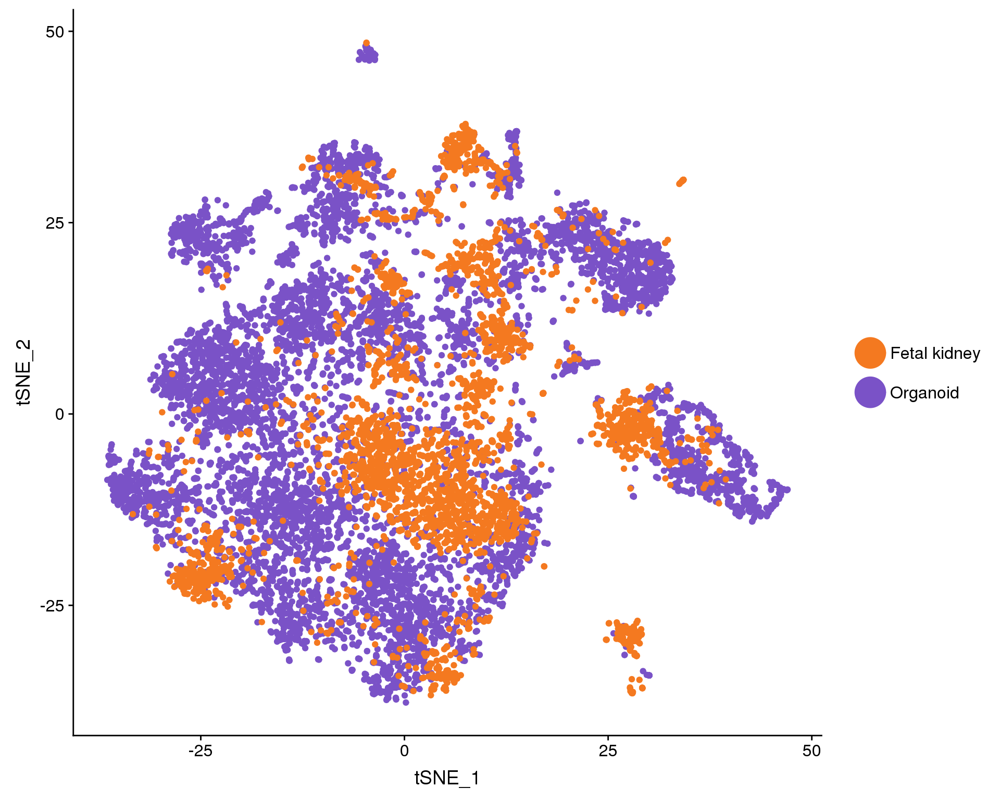
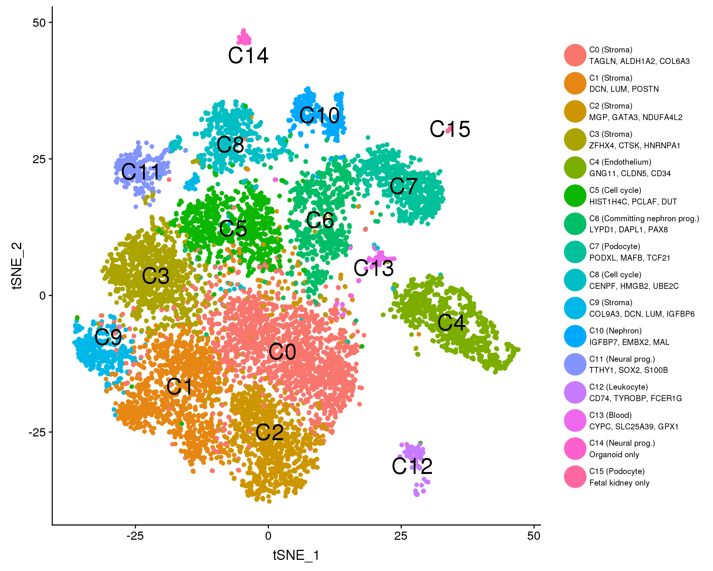
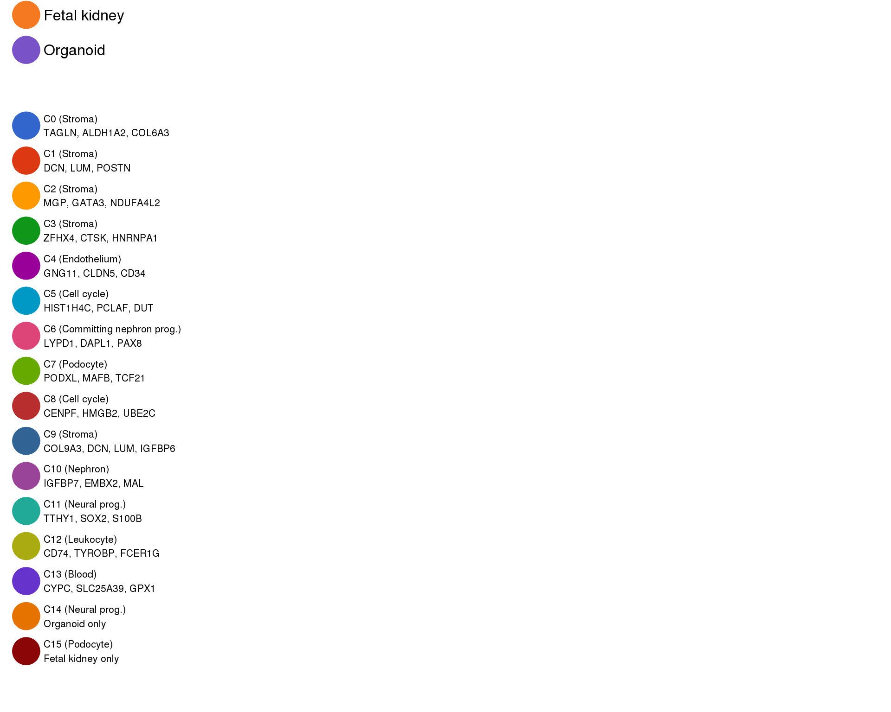
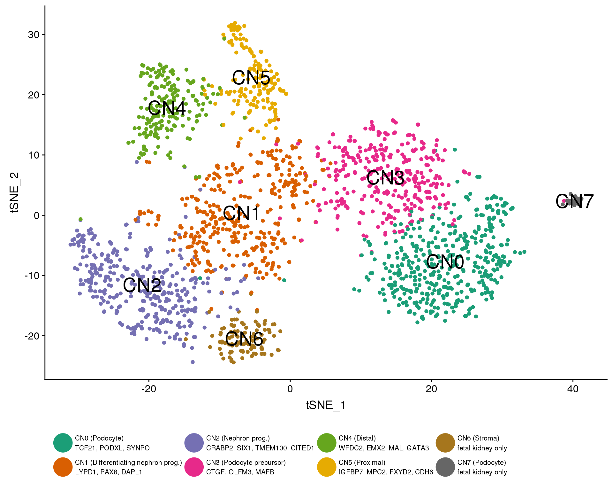
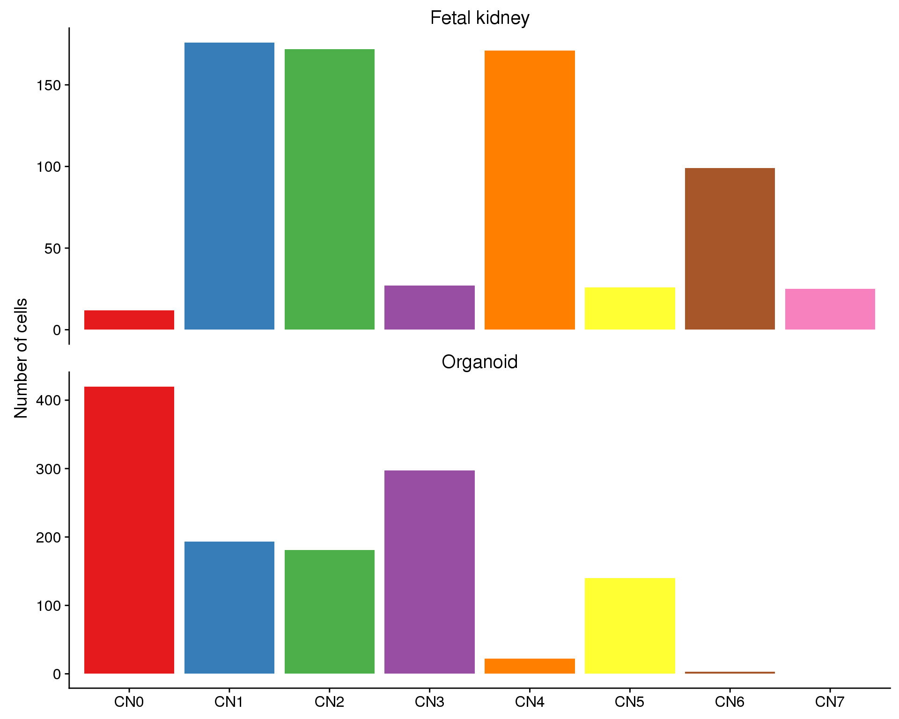
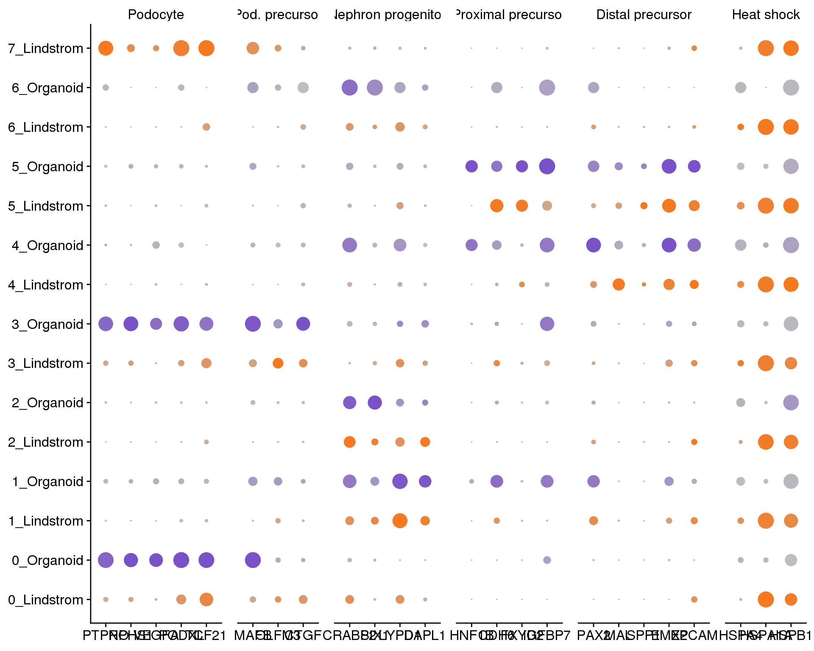
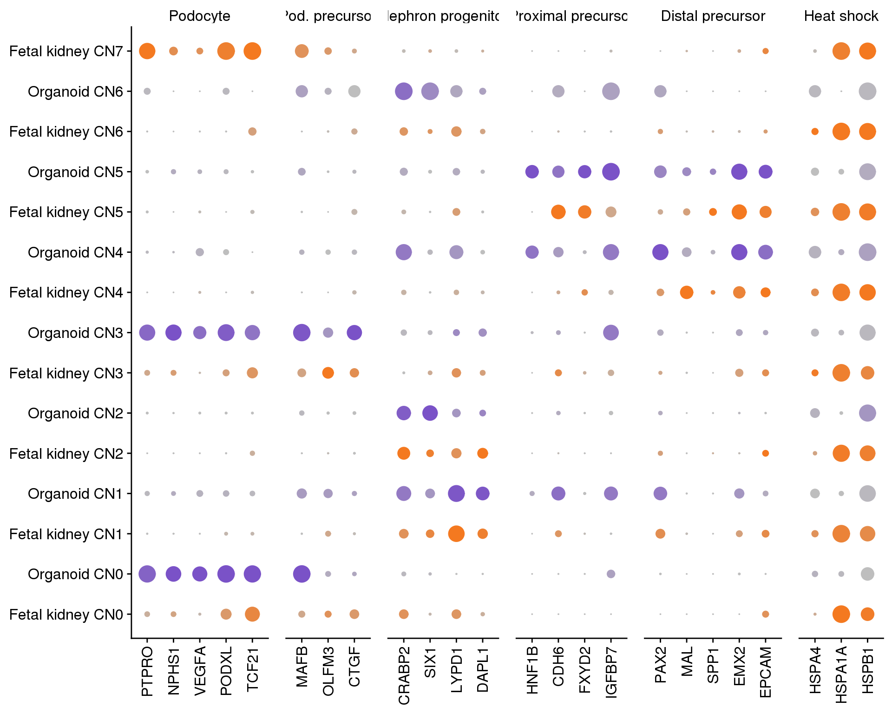
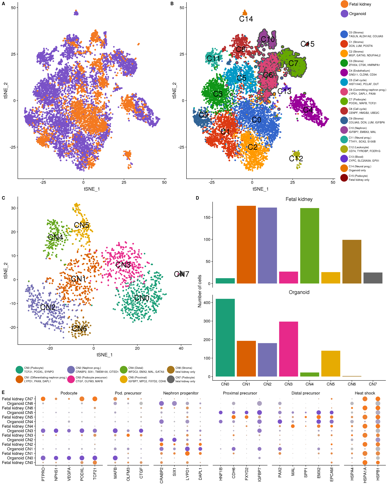

Last updated: 2018-09-11
workflowr checks: (Click a bullet for more information) ✔ R Markdown file: up-to-date
Great! Since the R Markdown file has been committed to the Git repository, you know the exact version of the code that produced these results.
✔ Environment: empty
Great job! The global environment was empty. Objects defined in the global environment can affect the analysis in your R Markdown file in unknown ways. For reproduciblity it’s best to always run the code in an empty environment.
✔ Seed:
set.seed(20180730)
The command set.seed(20180730) was run prior to running the code in the R Markdown file. Setting a seed ensures that any results that rely on randomness, e.g. subsampling or permutations, are reproducible.
✔ Session information: recorded
Great job! Recording the operating system, R version, and package versions is critical for reproducibility.
✔ Repository version: 1d8b5a6
wflow_publish or wflow_git_commit). workflowr only checks the R Markdown file, but you know if there are other scripts or data files that it depends on. Below is the status of the Git repository when the results were generated:
Ignored files:
Ignored: .Rhistory
Ignored: .Rproj.user/
Ignored: analysis/cache/
Ignored: packrat/lib-R/
Ignored: packrat/lib-ext/
Ignored: packrat/lib/
Ignored: packrat/src/
Unstaged changes:
Deleted: output/07_Combined_Clustering/c7_c17_lind_de.csv
| File | Version | Author | Date | Message |
|---|---|---|---|---|
| Rmd | 1d8b5a6 | Luke Zappia | 2018-09-11 | Update methods |
| html | 1948c52 | Luke Zappia | 2018-09-10 | Rebuild figures |
| Rmd | 91342d1 | Luke Zappia | 2018-09-10 | Adjust colours and remove shadows |
| Rmd | 35d26cc | Luke Zappia | 2018-09-10 | Update Figure 2E gene list |
| html | 0a266e9 | Luke Zappia | 2018-09-07 | Build figures |
| Rmd | c30f923 | Luke Zappia | 2018-09-07 | Add combined figures |
# scRNA-seq
library("Seurat")
library("monocle")
# Plotting
library("clustree")
library("cowplot")
# Presentation
library("glue")
library("knitr")
# Parallel
# Paths
library("here")
# Output
# Tidyverse
library("tidyverse")source(here("R/output.R"))comb.path <- here("data/processed/Combined_clustered.Rds")
comb.neph.path <- here("data/processed/Combined_nephron.Rds")
dir.create(here("output", DOCNAME), showWarnings = FALSE)In this document we are going to look at all of the organoids analysis results and produce a series of figures for the paper.
if (file.exists(comb.path)) {
comb <- read_rds(comb.path)
} else {
stop("Clustered Combined dataset is missing. ",
"Please run '07_Combined_Clustering.Rmd' first.",
call. = FALSE)
}if (file.exists(comb.neph.path)) {
comb.neph <- read_rds(comb.neph.path)
} else {
stop("Clustered Combined nephron dataset is missing. ",
"Please run '07B_Organoids_Nephron.Rmd' first.",
call. = FALSE)
}plot.data <- comb %>%
GetDimReduction("tsne", slot = "cell.embeddings") %>%
data.frame() %>%
rownames_to_column("Cell") %>%
mutate(Group = comb@meta.data$Group) %>%
mutate(Group = if_else(Group == "Lindstrom", "Fetal kidney", Group)) %>%
mutate(Cluster = comb@ident)
f2A <- ggplot(plot.data, aes(x = tSNE_1, y = tSNE_2, colour = Group)) +
geom_point() +
scale_color_manual(values = c("#EC008C", "#00ADEF")) +
guides(colour = guide_legend(override.aes = list(size = 10))) +
theme_cowplot() +
theme(legend.position = "right",
legend.title = element_blank())
ggsave(here("output", DOCNAME, "figure2A.png"), f2A,
height = 8, width = 10)
ggsave(here("output", DOCNAME, "figure2A.pdf"), f2A,
height = 8, width = 10)
f2A
| Version | Author | Date |
|---|---|---|
| 0a266e9 | Luke Zappia | 2018-09-07 |
lab.data <- plot.data %>%
group_by(Cluster) %>%
summarise(tSNE_1 = mean(tSNE_1),
tSNE_2 = mean(tSNE_2)) %>%
mutate(Label = paste0("C", Cluster))
clust.labs <- c(
"C0 (Stroma)\nTAGLN, ALDH1A2, COL6A3",
"C1 (Stroma)\nDCN, LUM, POSTN",
"C2 (Stroma)\nMGP, GATA3, NDUFA4L2",
"C3 (Stroma)\nZFHX4, CTSK, HNRNPA1",
"C4 (Endothelium)\nGNG11, CLDN5, CD34",
"C5 (Cell cycle)\nHIST1H4C, PCLAF, DUT",
"C6 (Committing nephron prog.)\nLYPD1, DAPL1, PAX8",
"C7 (Podocyte)\nPODXL, MAFB, TCF21",
"C8 (Cell cycle)\nCENPF, HMGB2, UBE2C",
"C9 (Stroma)\nCOL9A3, DCN, LUM, IGFBP6",
"C10 (Nephron)\nIGFBP7, EMBX2, MAL",
"C11 (Neural prog.)\nTTHY1, SOX2, S100B",
"C12 (Leukocyte)\nCD74, TYROBP, FCER1G",
"C13 (Blood)\nCYPC, SLC25A39, GPX1",
"C14 (Neural prog.)\nOrganoid only",
"C15 (Podocyte)\nFetal kidney only"
)
f2B <- ggplot(plot.data, aes(x = tSNE_1, y = tSNE_2, colour = Cluster)) +
geom_point() +
geom_text(data = lab.data, aes(label = Label), colour = "black", size = 8) +
scale_colour_discrete(labels = clust.labs) +
guides(colour = guide_legend(ncol = 1, override.aes = list(size = 10),
label.theme = element_text(size = 8))) +
theme_cowplot() +
theme(legend.position = "right",
legend.title = element_blank())
ggsave(here("output", DOCNAME, "figure2B.png"), f2B,
height = 8, width = 10)
ggsave(here("output", DOCNAME, "figure2B.pdf"), f2B,
height = 8, width = 10)
f2B
| Version | Author | Date |
|---|---|---|
| 0a266e9 | Luke Zappia | 2018-09-07 |
lA <- get_legend(f2A)
lB <- get_legend(f2B)
lAB <- plot_grid(lA, lB, ncol = 1, rel_heights = c(0.1, 1))
lAB
| Version | Author | Date |
|---|---|---|
| 0a266e9 | Luke Zappia | 2018-09-07 |
plot.data <- comb.neph %>%
GetDimReduction("tsne", slot = "cell.embeddings") %>%
data.frame() %>%
rownames_to_column("Cell") %>%
mutate(Cluster = comb.neph@ident)
lab.data <- plot.data %>%
group_by(Cluster) %>%
summarise(tSNE_1 = mean(tSNE_1),
tSNE_2 = mean(tSNE_2)) %>%
mutate(Label = paste0("CN", Cluster))
clust.labs <- c(
"CN0 (Podocyte)\nTCF21, PODXL, SYNPO",
"CN1 (Differentiating nephron prog.)\nLYPD1, PAX8, DAPL1",
"CN2 (Nephron prog.)\nCRABP2, SIX1, TMEM100, CITED1",
"CN3 (Podocyte precursor)\nCTGF, OLFM3, MAFB",
"CN4 (Distal)\nWFDC2, EMX2, MAL, GATA3",
"CN5 (Proximal)\nIGFBP7, MPC2, FXYD2, CDH6",
"CN6 (Stroma)\nfetal kidney only",
"CN7 (Podocyte)\nfetal kidney only"
)
f2C <- ggplot(plot.data, aes(x = tSNE_1, y = tSNE_2, colour = Cluster)) +
geom_point(size = 3) +
geom_text(data = lab.data, aes(label = Label), colour = "black", size = 8) +
scale_color_brewer(palette = "Set1", labels = clust.labs) +
guides(colour = guide_legend(ncol = 4, override.aes = list(size = 10),
label.theme = element_text(size = 8))) +
theme_cowplot() +
theme(legend.position = "bottom",
legend.title = element_blank())
ggsave(here("output", DOCNAME, "figure2C.png"), f2C,
height = 8, width = 10)
ggsave(here("output", DOCNAME, "figure2C.pdf"), f2C,
height = 8, width = 10)
f2C
| Version | Author | Date |
|---|---|---|
| 0a266e9 | Luke Zappia | 2018-09-07 |
plot.data <- comb.neph@meta.data %>%
select(NephCluster, Group) %>%
mutate(NephCluster = paste0("CN", NephCluster)) %>%
mutate(Group = if_else(Group == "Lindstrom", "Fetal kidney", Group))
f2D <- ggplot(plot.data, aes(x = NephCluster, fill = NephCluster)) +
geom_bar() +
scale_fill_brewer(palette = "Set1") +
labs(y = "Number of cells") +
facet_wrap(~ Group, ncol = 1, scales = "free_y") +
theme_cowplot() +
theme(legend.position = "none",
axis.title.x = element_blank(),
strip.text = element_text(size = 15,
margin = margin(0, 0, 2, 0, "pt")),
strip.background = element_blank(),
strip.placement = "outside")
ggsave(here("output", DOCNAME, "figure2D.png"), f2D,
height = 8, width = 10)
ggsave(here("output", DOCNAME, "figure2D.pdf"), f2D,
height = 8, width = 10)
f2D
| Version | Author | Date |
|---|---|---|
| 0a266e9 | Luke Zappia | 2018-09-07 |
genes <- c("PTPRO", "NPHS1", "VEGFA", "PODXL", "TCF21", "MAFB", "OLFM3", "CTGF",
"SIX1", "TMEM100", "CITED1", "LYPD1", "PAX8", "DAPL1", "IGFBP7",
"EMX2", "CDH6", "WFDC2", "MAL", "EPCAM", "HSPA1A", "HSPA1B",
"DNAJB1")
gene.groups <- rev(c(rep("Podocyte", 5),
rep("Pod. precursor", 3),
rep("Nephron progenitor", 3),
rep("Differentiating NP", 3),
rep("Proximal precursor", 3),
rep("Distal precursor", 3),
rep("Heatshock", 3))) %>%
fct_relevel("Podocyte", "Pod. precursor", "Nephron progenitor",
"Differentiating NP", "Proximal precursor",
"Distal precursor", "Heatshock")
clust.labs <- c(
"Fetal kidney CN0", "Organoid CN0",
"Fetal kidney CN1", "Organoid CN1",
"Fetal kidney CN2", "Organoid CN2",
"Fetal kidney CN3", "Organoid CN3",
"Fetal kidney CN4", "Organoid CN4",
"Fetal kidney CN5", "Organoid CN5",
"Fetal kidney CN6", "Organoid CN6",
"Fetal kidney CN7", "Organoid CN7"
)
f2E <- SplitDotPlotGG(comb.neph, "Group", genes, gene.groups,
cols.use = c("#EC008C", "#00ADEF"), dot.scale = 5,
do.return = TRUE) +
scale_y_discrete(labels = clust.labs) +
theme(axis.text.x = element_text(angle = 90, vjust = 0.5, hjust = 1))
| Version | Author | Date |
|---|---|---|
| 0a266e9 | Luke Zappia | 2018-09-07 |
for (y in seq(2.5, 14.5, 2)) {
f2E <- f2E + geom_hline(yintercept = y, size = 0.2, colour = "grey70")
}
ggsave(here("output", DOCNAME, "figure2E.png"), f2E,
height = 4, width = 20)
ggsave(here("output", DOCNAME, "figure2E.pdf"), f2E,
height = 8, width = 10)
f2E
| Version | Author | Date |
|---|---|---|
| 0a266e9 | Luke Zappia | 2018-09-07 |
p1 <- plot_grid(f2A + theme(legend.position = "none"),
f2B + theme(legend.position = "none"),
lAB, nrow = 1, rel_widths = c(1, 1, 0.3),
labels = c("A", "B", ""))
p2 <- plot_grid(f2C, f2D, nrow = 1,
labels = c("C", "D", ""))
panel <- plot_grid(p1, p2, f2E, ncol = 1, labels = c("", "", "E"),
rel_heights = c(1, 1, 0.5))
ggsave(here("output", DOCNAME, "figure2_panel.png"), panel,
height = 20, width = 16)
ggsave(here("output", DOCNAME, "figure2_panel.pdf"), panel,
height = 20, width = 16)
panel
| Version | Author | Date |
|---|---|---|
| 0a266e9 | Luke Zappia | 2018-09-07 |
This table describes the output files produced by this document. Right click and Save Link As… to download the results.
kable(data.frame(
File = c(
glue("[figure2A.png]({getDownloadURL('figure2A.png', DOCNAME)})"),
glue("[figure2A.pdf]({getDownloadURL('figure2A.pdf', DOCNAME)})"),
glue("[figure2B.png]({getDownloadURL('figure2B.png', DOCNAME)})"),
glue("[figure2B.pdf]({getDownloadURL('figure2B.pdf', DOCNAME)})"),
glue("[figure2C.png]({getDownloadURL('figure2C.png', DOCNAME)})"),
glue("[figure2C.pdf]({getDownloadURL('figure2C.pdf', DOCNAME)})"),
glue("[figure2D.png]({getDownloadURL('figure2D.png', DOCNAME)})"),
glue("[figure2D.pdf]({getDownloadURL('figure2D.pdf', DOCNAME)})"),
glue("[figure2E.png]({getDownloadURL('figure2E.png', DOCNAME)})"),
glue("[figure2E.pdf]({getDownloadURL('figure2E.pdf', DOCNAME)})"),
glue("[figure2_panel.png]({getDownloadURL('figure2_panel.png', DOCNAME)})"),
glue("[figure2_panel.pdf]({getDownloadURL('figure2_panel.pdf', DOCNAME)})")
),
Description = c(
"Figure 2A in PNG format",
"Figure 2A in PDF format",
"Figure 2B in PNG format",
"Figure 2B in PDF format",
"Figure 2C in PNG format",
"Figure 2C in PDF format",
"Figure 2D in PNG format",
"Figure 2D in PDF format",
"Figure 2E in PNG format",
"Figure 2E in PDF format",
"Figure panel in PNG format",
"Figure panel in PDF format"
)
))| File | Description |
|---|---|
| figure2A.png | Figure 2A in PNG format |
| figure2A.pdf | Figure 2A in PDF format |
| figure2B.png | Figure 2B in PNG format |
| figure2B.pdf | Figure 2B in PDF format |
| figure2C.png | Figure 2C in PNG format |
| figure2C.pdf | Figure 2C in PDF format |
| figure2D.png | Figure 2D in PNG format |
| figure2D.pdf | Figure 2D in PDF format |
| figure2E.png | Figure 2E in PNG format |
| figure2E.pdf | Figure 2E in PDF format |
| figure2_panel.png | Figure panel in PNG format |
| figure2_panel.pdf | Figure panel in PDF format |
devtools::session_info() setting value
version R version 3.5.0 (2018-04-23)
system x86_64, linux-gnu
ui X11
language (EN)
collate en_US.UTF-8
tz Australia/Melbourne
date 2018-09-06
package * version date source
abind 1.4-5 2016-07-21 cran (@1.4-5)
acepack 1.4.1 2016-10-29 cran (@1.4.1)
ape 5.1 2018-04-04 cran (@5.1)
assertthat 0.2.0 2017-04-11 CRAN (R 3.5.0)
backports 1.1.2 2017-12-13 CRAN (R 3.5.0)
base * 3.5.0 2018-06-18 local
base64enc 0.1-3 2015-07-28 CRAN (R 3.5.0)
bibtex 0.4.2 2017-06-30 cran (@0.4.2)
bindr 0.1.1 2018-03-13 cran (@0.1.1)
bindrcpp 0.2.2 2018-03-29 cran (@0.2.2)
Biobase * 2.40.0 2018-07-30 Bioconductor
BiocGenerics * 0.26.0 2018-07-30 Bioconductor
bitops 1.0-6 2013-08-17 cran (@1.0-6)
broom 0.5.0 2018-07-17 cran (@0.5.0)
caret 6.0-80 2018-05-26 cran (@6.0-80)
caTools 1.17.1.1 2018-07-20 cran (@1.17.1.)
cellranger 1.1.0 2016-07-27 CRAN (R 3.5.0)
checkmate 1.8.5 2017-10-24 cran (@1.8.5)
class 7.3-14 2015-08-30 CRAN (R 3.5.0)
cli 1.0.0 2017-11-05 CRAN (R 3.5.0)
cluster 2.0.7-1 2018-04-13 CRAN (R 3.5.0)
clustree * 0.2.2.9000 2018-08-01 Github (lazappi/clustree@66a865b)
codetools 0.2-15 2016-10-05 CRAN (R 3.5.0)
colorspace 1.3-2 2016-12-14 cran (@1.3-2)
combinat 0.0-8 2012-10-29 CRAN (R 3.5.0)
compiler 3.5.0 2018-06-18 local
cowplot * 0.9.3 2018-07-15 cran (@0.9.3)
crayon 1.3.4 2017-09-16 CRAN (R 3.5.0)
CVST 0.2-2 2018-05-26 cran (@0.2-2)
data.table 1.11.4 2018-05-27 cran (@1.11.4)
datasets * 3.5.0 2018-06-18 local
ddalpha 1.3.4 2018-06-23 cran (@1.3.4)
DDRTree * 0.1.5 2017-04-30 CRAN (R 3.5.0)
densityClust 0.3 2017-10-24 CRAN (R 3.5.0)
DEoptimR 1.0-8 2016-11-19 cran (@1.0-8)
devtools 1.13.6 2018-06-27 CRAN (R 3.5.0)
diffusionMap 1.1-0.1 2018-07-21 cran (@1.1-0.1)
digest 0.6.15 2018-01-28 CRAN (R 3.5.0)
dimRed 0.1.0 2017-05-04 cran (@0.1.0)
diptest 0.75-7 2016-12-05 cran (@0.75-7)
docopt 0.6 2018-08-03 CRAN (R 3.5.0)
doSNOW 1.0.16 2017-12-13 cran (@1.0.16)
dplyr * 0.7.6 2018-06-29 cran (@0.7.6)
DRR 0.0.3 2018-01-06 cran (@0.0.3)
dtw 1.20-1 2018-05-18 cran (@1.20-1)
evaluate 0.10.1 2017-06-24 CRAN (R 3.5.0)
fastICA 1.2-1 2017-06-12 CRAN (R 3.5.0)
fitdistrplus 1.0-9 2017-03-24 cran (@1.0-9)
flexmix 2.3-14 2017-04-28 cran (@2.3-14)
FNN 1.1 2013-07-31 cran (@1.1)
forcats * 0.3.0 2018-02-19 CRAN (R 3.5.0)
foreach 1.4.4 2017-12-12 cran (@1.4.4)
foreign 0.8-71 2018-07-20 CRAN (R 3.5.0)
Formula 1.2-3 2018-05-03 cran (@1.2-3)
fpc 2.1-11.1 2018-07-20 cran (@2.1-11.)
gbRd 0.4-11 2012-10-01 cran (@0.4-11)
gdata 2.18.0 2017-06-06 cran (@2.18.0)
geometry 0.3-6 2015-09-09 cran (@0.3-6)
ggforce 0.1.3 2018-07-07 CRAN (R 3.5.0)
ggplot2 * 3.0.0 2018-07-03 cran (@3.0.0)
ggraph * 1.0.2 2018-07-07 CRAN (R 3.5.0)
ggrepel 0.8.0 2018-05-09 CRAN (R 3.5.0)
ggridges 0.5.0 2018-04-05 cran (@0.5.0)
git2r 0.21.0 2018-01-04 CRAN (R 3.5.0)
glue * 1.3.0 2018-07-17 cran (@1.3.0)
gower 0.1.2 2017-02-23 cran (@0.1.2)
gplots 3.0.1 2016-03-30 cran (@3.0.1)
graphics * 3.5.0 2018-06-18 local
grDevices * 3.5.0 2018-06-18 local
grid 3.5.0 2018-06-18 local
gridExtra 2.3 2017-09-09 cran (@2.3)
gtable 0.2.0 2016-02-26 cran (@0.2.0)
gtools 3.8.1 2018-06-26 cran (@3.8.1)
haven 1.1.2 2018-06-27 CRAN (R 3.5.0)
here * 0.1 2017-05-28 CRAN (R 3.5.0)
highr 0.7 2018-06-09 CRAN (R 3.5.0)
Hmisc 4.1-1 2018-01-03 cran (@4.1-1)
hms 0.4.2 2018-03-10 CRAN (R 3.5.0)
HSMMSingleCell 0.114.0 2018-08-28 Bioconductor
htmlTable 1.12 2018-05-26 cran (@1.12)
htmltools 0.3.6 2017-04-28 CRAN (R 3.5.0)
htmlwidgets 1.2 2018-04-19 cran (@1.2)
httr 1.3.1 2017-08-20 CRAN (R 3.5.0)
ica 1.0-2 2018-05-24 cran (@1.0-2)
igraph 1.2.2 2018-07-27 cran (@1.2.2)
ipred 0.9-6 2017-03-01 cran (@0.9-6)
irlba * 2.3.2 2018-01-11 cran (@2.3.2)
iterators 1.0.10 2018-07-13 cran (@1.0.10)
jsonlite 1.5 2017-06-01 CRAN (R 3.5.0)
kernlab 0.9-26 2018-04-30 cran (@0.9-26)
KernSmooth 2.23-15 2015-06-29 CRAN (R 3.5.0)
knitr * 1.20 2018-02-20 CRAN (R 3.5.0)
lars 1.2 2013-04-24 cran (@1.2)
lattice 0.20-35 2017-03-25 CRAN (R 3.5.0)
latticeExtra 0.6-28 2016-02-09 cran (@0.6-28)
lava 1.6.2 2018-07-02 cran (@1.6.2)
lazyeval 0.2.1 2017-10-29 cran (@0.2.1)
limma 3.36.2 2018-06-21 Bioconductor
lmtest 0.9-36 2018-04-04 cran (@0.9-36)
lubridate 1.7.4 2018-04-11 cran (@1.7.4)
magic 1.5-8 2018-01-26 cran (@1.5-8)
magrittr 1.5 2014-11-22 CRAN (R 3.5.0)
MASS 7.3-50 2018-04-30 CRAN (R 3.5.0)
Matrix * 1.2-14 2018-04-09 CRAN (R 3.5.0)
matrixStats 0.54.0 2018-07-23 CRAN (R 3.5.0)
mclust 5.4.1 2018-06-27 cran (@5.4.1)
memoise 1.1.0 2017-04-21 CRAN (R 3.5.0)
metap 1.0 2018-07-25 cran (@1.0)
methods * 3.5.0 2018-06-18 local
mixtools 1.1.0 2017-03-10 cran (@1.1.0)
ModelMetrics 1.1.0 2016-08-26 cran (@1.1.0)
modelr 0.1.2 2018-05-11 CRAN (R 3.5.0)
modeltools 0.2-22 2018-07-16 cran (@0.2-22)
monocle * 2.8.0 2018-08-28 Bioconductor
munsell 0.5.0 2018-06-12 cran (@0.5.0)
mvtnorm 1.0-8 2018-05-31 cran (@1.0-8)
nlme 3.1-137 2018-04-07 CRAN (R 3.5.0)
nnet 7.3-12 2016-02-02 CRAN (R 3.5.0)
paletteer * 0.1.0 2018-07-10 CRAN (R 3.5.0)
parallel * 3.5.0 2018-06-18 local
pbapply 1.3-4 2018-01-10 cran (@1.3-4)
pheatmap 1.0.10 2018-05-19 CRAN (R 3.5.0)
pillar 1.3.0 2018-07-14 cran (@1.3.0)
pkgconfig 2.0.1 2017-03-21 cran (@2.0.1)
pls 2.6-0 2016-12-18 cran (@2.6-0)
plyr 1.8.4 2016-06-08 cran (@1.8.4)
png 0.1-7 2013-12-03 cran (@0.1-7)
prabclus 2.2-6 2015-01-14 cran (@2.2-6)
prodlim 2018.04.18 2018-04-18 cran (@2018.04)
proxy 0.4-22 2018-04-08 cran (@0.4-22)
purrr * 0.2.5 2018-05-29 cran (@0.2.5)
qlcMatrix 0.9.7 2018-04-20 CRAN (R 3.5.0)
R.methodsS3 1.7.1 2016-02-16 CRAN (R 3.5.0)
R.oo 1.22.0 2018-04-22 CRAN (R 3.5.0)
R.utils 2.6.0 2017-11-05 CRAN (R 3.5.0)
R6 2.2.2 2017-06-17 CRAN (R 3.5.0)
ranger 0.10.1 2018-06-04 cran (@0.10.1)
RANN 2.6 2018-07-16 cran (@2.6)
RColorBrewer 1.1-2 2014-12-07 cran (@1.1-2)
Rcpp 0.12.18 2018-07-23 cran (@0.12.18)
RcppRoll 0.3.0 2018-06-05 cran (@0.3.0)
Rdpack 0.8-0 2018-05-24 cran (@0.8-0)
readr * 1.1.1 2017-05-16 CRAN (R 3.5.0)
readxl 1.1.0 2018-04-20 CRAN (R 3.5.0)
recipes 0.1.3 2018-06-16 cran (@0.1.3)
reshape2 1.4.3 2017-12-11 cran (@1.4.3)
reticulate 1.9 2018-07-06 cran (@1.9)
rlang 0.2.1 2018-05-30 CRAN (R 3.5.0)
rmarkdown 1.10.2 2018-07-30 Github (rstudio/rmarkdown@18207b9)
robustbase 0.93-2 2018-07-27 cran (@0.93-2)
ROCR 1.0-7 2015-03-26 cran (@1.0-7)
rpart 4.1-13 2018-02-23 CRAN (R 3.5.0)
rprojroot 1.3-2 2018-01-03 CRAN (R 3.5.0)
rstudioapi 0.7 2017-09-07 CRAN (R 3.5.0)
Rtsne 0.13 2017-04-14 cran (@0.13)
rvest 0.3.2 2016-06-17 CRAN (R 3.5.0)
scales 0.5.0 2017-08-24 cran (@0.5.0)
scatterplot3d 0.3-41 2018-03-14 cran (@0.3-41)
SDMTools 1.1-221 2014-08-05 cran (@1.1-221)
segmented 0.5-3.0 2017-11-30 cran (@0.5-3.0)
Seurat * 2.3.1 2018-05-05 url
sfsmisc 1.1-2 2018-03-05 cran (@1.1-2)
slam 0.1-43 2018-04-23 CRAN (R 3.5.0)
snow 0.4-2 2016-10-14 cran (@0.4-2)
sparsesvd 0.1-4 2018-02-15 CRAN (R 3.5.0)
splines * 3.5.0 2018-06-18 local
stats * 3.5.0 2018-06-18 local
stats4 * 3.5.0 2018-06-18 local
stringi 1.2.4 2018-07-20 cran (@1.2.4)
stringr * 1.3.1 2018-05-10 CRAN (R 3.5.0)
survival 2.42-6 2018-07-13 CRAN (R 3.5.0)
tclust 1.4-1 2018-05-24 cran (@1.4-1)
tibble * 1.4.2 2018-01-22 cran (@1.4.2)
tidyr * 0.8.1 2018-05-18 cran (@0.8.1)
tidyselect 0.2.4 2018-02-26 cran (@0.2.4)
tidyverse * 1.2.1 2017-11-14 CRAN (R 3.5.0)
timeDate 3043.102 2018-02-21 cran (@3043.10)
tools 3.5.0 2018-06-18 local
trimcluster 0.1-2.1 2018-07-20 cran (@0.1-2.1)
tsne 0.1-3 2016-07-15 cran (@0.1-3)
tweenr 0.1.5 2016-10-10 CRAN (R 3.5.0)
units 0.6-0 2018-06-09 CRAN (R 3.5.0)
utils * 3.5.0 2018-06-18 local
VGAM * 1.0-5 2018-02-07 cran (@1.0-5)
viridis 0.5.1 2018-03-29 cran (@0.5.1)
viridisLite 0.3.0 2018-02-01 cran (@0.3.0)
whisker 0.3-2 2013-04-28 CRAN (R 3.5.0)
withr 2.1.2 2018-03-15 CRAN (R 3.5.0)
workflowr 1.1.1 2018-07-06 CRAN (R 3.5.0)
xml2 1.2.0 2018-01-24 CRAN (R 3.5.0)
yaml 2.2.0 2018-07-25 cran (@2.2.0)
zoo 1.8-3 2018-07-16 cran (@1.8-3) This reproducible R Markdown analysis was created with workflowr 1.1.1
{kind=link}
{kind=link}
{kind=link}
{kind=link}
{kind=link}
{kind=link}